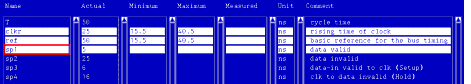
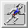
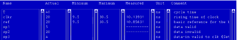

How to perform a measurement
A major feature of the Spec Tool is that you can perform search measurements - based on the equations and specifications you have just set up - quickly and easily, from within the Spec Tool window. You can see immediately any measured values, and so make changes to the values of your specifications (if necessary).
A measurement will only be carried out on variables whose minimum, maximum and actual values have been defined in the table in the main Spec Tool screen.
When you perform a measurement, a dedicated Spec Search is carried out on all highlighted variables.
The primary sets are automatically adapted to what is needed for the equation and specification sets.
The search type is automatically set to lin/bin (linear, binary), the step width calculated as (difference between the min and max values)/100 and the resolution is set to 0.00001 (the unit is ns but this is not specified because you are defining only a resolution here). If you need a more sophisticated search test, you can use the SpecSearch test method library.
- In the variable table from within the main Spec Tool window, highlight the
name of any variables you wish to perform a measurement on (for each
variable name you highlight, the complete line in the table will be highlighted). Use the shift
key in conjunction with the left mouse-click to define multiple variables.

- Click the

button in the top right of the Spec Tool screen.The values that are measured appear in the measured column.
